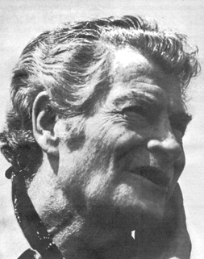
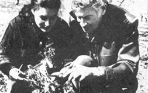

Euell Gibbons has probably turned more people on to nature-certainly to wild foods - than any other living writer. His first book about foraged fare, Stalking the Wild Asparagus, was (and continues to be) such a best seller that Gibbons has followed its success with five more popular titles. Three - Stalking the Healthful Herbs, Stalking the Blue-Eyed Scallop and Beachcomber's Handbook - are wild foods manuals, a fourth- Feast on a Diabetic Diet- tells how to do just that and the fifth- Stalking the Good Life -is an expansion of his Organic Gardening magazine column, "The Organic Nature Lover".
Euell's books are not based on idle theory. He's been known to assemble dinners from free pickin's foraged in New York City's Central Park . . . wild foods gathered in the arid Southwest... the bounty washed onto a tropical beach . . . potherbs blooming in a Chicago vacant lot. . . and the wildings found during a "Down East" canoe excursion. All were equally sumptious. Once, Gibbons even gathered 25 varieties of volunteer edibles within 100 feet of a supermarket.
Now and then Euell teaches the techniques of wilderness living to boys and girls at the Outward Bound schools in Minnesota and Maine. A Quaker, he has also taught at Pendle Hill, a Quaker center.
Euell Gibbons is well over six feet tall, has a Bob Hope nose, plenty of wavy hair and the kind of sharp features that caricaturists love. He's led a colorful life as cowboy, farmer, hobo, alcoholic, carpenter, Depression-days communist and beachcomber. Only recently has he enjoyed financial security (Stalking the Wild Asparagus was published in 1962).
Gibbons and his wife, Freda, now live outside a small vil lage in Pennsylvania-Dutch country on a piece of property they call "It Wonders Me." Hal Smith conducted the following interview in the Gibbons home.
PLOWBOY: I suppose everyone who meets you asks the same question . . . how did you learn about foraging?
GIBBONS: By practicing it as a hobby for 50 years. I was first introduced to wild foods by my mother and maternal grandmother-both of whom were fairly good foragers-and I immediately started trying to learn everything I could about such edibles. I invented my first wild food recipe by pounding together hickory nuts and berries to make a candy bar when I was five years old.
PLOWBOY: Was that when you and your family survived on foraged foods in New Mexico?
GIBBONS: No. That period of my life-the time when my knowledge of wild foods really came in handy-was a little later . . . after I already knew quite a bit about foraging. I've simply had an interest in wild edibles for as long as I can remember. This interest is probably connected with a daydream of independence . . . of wanting to say, "Stop the world!" and then doing it. That's always been there to some extent.
My fascination with foraging has also been a handle to a great deal more than just wild foods. It's been an entry to the study of botany and nature generally. There's even a bit of one-upmanship involved when I crunch into one of nature's treats and know I'm enjoying a taste thrill that some of the wealthiest people in the world have never experienced.
I can tell you some of the things that did not lead me into wild foods. It was not an interest in the survival of lost hunters and soldiers or stupid airplane pilots. I had a friend-a very good guy-who was running the survival school at a Navy airbase in Maine. I worked with him a few times . . . strictly on a volunteer basis because I won't accept any job with the military. I looked over their material, visited a few times. Both of us were critical of the armed forces' manuals on survival and very critical of their teaching methods.
PLOWBOY: What was wrong with them?
GIBBONS: You can't expect someone to remember a plant when you say, "There's something you can eat as an alternative to starvation." How much better that individual will remember if he incorporates a wild fruit or vegetable into his food right now and finds that he actually likes it.
I've found the latter approach very effective with children as a method of arousing a genuine interest in nature, which I think is the greatest value of foraging. A wrong attitude about nature is almost an integral part of our culture, and all the crying we're doing about the environment is going to come to nothing as long as such an attitude persists. We can change this misconception . . . but only by bringing our children into an intimate, creative relationship with nature. Let them see that they're a part of it . . . let them see that plants have meaning for them. I've watched this method work enough times to trust it.
PLOWBOY: I know you've long deplored the fact that many people in our culture consider nature-in-the-wild a menace. I remember when a boy near Philadelphia died from eating horse nettle berries. You sensibly pointed out that horse nettles posed far less threat to our children than the family medicine cabinet. Nevertheless, frightened people demanded that fields be sprayed with poisons, wild areas burned off with flame-throwers and open spaces paved over. Can we really change such irrational fear of nature into a feeling of oneness with it?
GIBBONS: That's what I'm trying to do. That's what I see as the chief value of wild foods. If you take a child out to the berry bush where he can pick and eat the fruit for himself, he can't help but change his attitude. A child has to change if you lead him into seeing how he himself relates to nature.
PLOWBOY: Is it that cut and dried? That simple?
GIBBONS: Not always. Taking kids out in the field for such a lesson sounds easy, but it can be very hard to do in today's world of six-year-olds who're already prejudiced. I took such a boy out to gather wild blackberries and he thought we were going to buy them. He was really turned off when he saw me picking the berries from a bush. It was somehow nasty to him.
PLOWBOY: How did we get ourselves into such a ridiculous position?
GIBBONS: This anti-nature attitude in our culture comes from very respectable sources. One of those sources was Charles Darwin: he said that sometimes the "fittest" creature was the one which cooperated . . . but every example he gave us was an example of competition. Another source was Spencer, who first used the term "struggle for existence". Wallace too. Even Thomas Huxley claimed that each form of life is in continuous battle and competition with every other. There's nothing wrong with that statement except that it's pure bullcrap (laughter).
Nature is typified by cooperation and mutualism. It's everywhere. The production of fruit and the scattering of seed by animals is one example. Flowers and bees are another. is 'ire There are thousands and thousands of examples of mutual aid . . . of one life form absolutely dependent, on another. I find that the "fittest" is very often the life form which has best learned to cooperate with other life forms around it.
PLOWBOY: Has no one else noticed this?
GIBBONS: Of course. Kropotkin, to name one. In 1898 he tried to refute Huxley with his book, MUTUAL AID. . . and not long ago Kropotkin was writing another book to prove that there's even cooperation within a species, let alone between species. Yet-in one of his more recent books, A HISTORIAN'S APPROACH TO RELIGION-we find Arnold Toynbee saying that every form of life tries to establish itself as the center of the universe and in so doing comes into competitive rivalry with every other form of life. That's a ridiculous statement for a truly great man to make. It simply isn't true.
It's much more accurate to say that every life form, in order to survive, must come into non-competitive relationships with dozens of other life forms. Life doesn't exist alone. It exists in interdependent communities . . . and there are no boundaries around communities.
I read an article the other day by an ecologist who was talking about the closed community of life in a cave. Surely he ought to know there can be no such thing because there'd be no source of energy. All energy has to come from the sun and the bats are flying in and out eating the insects which eat the plants which get the sun. The bats traveling in and out are the "truck drivers" . . . all the other life forms in the cave depend on them and their manure and bodies. There's no more a closed community in a cave than anywhere else in the world. The web of life is connected from the fish in the deepest part of the ocean to the rat running along the top of the Continental Divide. It's all a unity and we're not separate from it.
Nevertheless we indiscriminately kill life forms all the time. The people who build superhighways across the country never find out what living things they're destroying. The builders don't even know the life forms' names, natures, or relationship to man . . . they just plow straight through. The people who spray the roadsides have no idea what life is being destroyed or what relationship that life has to their own. For example, if we listened to the people who say, in effect, "Let's kill all wild vegetation in the world because a boy got poisoned," . . . we'd all soon die: most of our oxygen is supplied by wild vegetation.
PLOWBOY: But what about the folks in the middle . . . the people who feel that the "hate nature" idea is wrong and who would love to know how to forage . . . but who have no "wise uncle" to instruct them in the ways of the wilds. Can such individuals learn to forage from a book?
GIBBONS: Some of them can't. People have become so estranged from nature that a great many don't know how to go about recognizing a plant. They don't know how a plant is formed, what its essential parts are. Such people ask, "How can I tell the edible ones from the poisonous?" They want a shortcut so they don't have to learn anything . . . but there isn't any shortcut, other than growing up with or acquiring the knowledge firsthand.
Think of it this way: it would be extremely difficult-in a book-to teach someone to distinguish between a head of cabbage and a head of lettuce. Yet anyone who's raised a gardep. orhas become acquainted with supermarket produce recognizes the difference quite easily. It's the same with wild foods. A book can only present information. It's up to the individual to absorb that knowledge and put it to use . . . and that takes some effort and firsthand living.
Unfortunately, many of us don't seem to want to expend the necessary energy. It's easier for a parent to just tell a child that some wild plants are poisonous and, therefore, the child should never touch a volunteer plant, look at one, get close to one, etc., etc. The parent doesn't have to learn a damn thing and the child is robbed of a tremendous heritage. As a result, we get more alienated from nature every minute. We don't even understand "The Barefoot Boy " these days because Whittier was talking about a relationship with nature that we don't have anymore.
A boy who lives near here came over once and got so excited when he found me out in the orchard gathering wild strawberries. He'd lived here all his life and never even knew they were there. My God, when I was a boy the idea of letting wild berries get past you . . . I mean, we didn't have a Coke machine at our little country school but we knew exactly where every wild nut-every wild berry-was growing and when recess came we were right out after them. To me it's a damn shame that today's kids aren't getting what's coming to them.
PLOWBOY: Which brings us back to the way we relate and interrelate with nature . . .
GIBBONS: Right.
PLOWBOY:. . . and the question of how we should approach nature.
GIBBONS: We need to develop an attitude of loving cooperation with no idea of "conquest". It's much easier to learn about a thing you love than a thing you intend to conquer or dominate. We're thinking of domination if we say "weeds", "brush" or "briars" when we're really talking about lamb's-quarters, blackhaws or blackberries. Emerson's definition was, "A weed is a plant whose virtues we have not yet discovered."
PLOWBOY: What about shooting wild animals for food? Many of today's people-especially young people-look upon hunting as another futile "conquest" of nature. Obviously you don't because you sometimes eat wild game. You're a pacifist but not a vegetarian. Does that square?
GIBBONS: Yes, it squares. Very much so. I don't think that eating animals is a conquest of nature at all. To hunt and eat wild animals is to assume your role within nature.
Now I can see a vegetarian saying, "I won't eat commercially produced meats because this is a wasteful means of feeding people." The pig, for instance, is raised for no other purpose than so that we may eat its flesh . . . yet pigs are way up in the food chain. It takes at least 10 pounds of vegetable protein to make one pound of animal protein and it takes 10 pounds of pig to make one pound of growing child. It would be ten times more efficient, you see, for us to interrupt this food chain a step lower and eat the vegetable protein directly.
But that doesn't apply to eating sea creatures, shore creatures and other wild animals. They're already there naturally. If I'm going to relate to them, I must relate for what I am . . . and I'm part predator.
Take a mussel on the Maine coast. Every mussel produces about four million eggs a year for three years. That's twelve million eggs . . . and only two can be allowed to survive or else the population of mussels will change. If all those eggs survived, the world would be ten feet deep in mussels in one year. The surplus is not only available for eating, it must be eaten. Some of the excess eggs are even eaten by the mussels themselves.
The same thing in decreasing frequency holds true right on up the scale. At the present time-because we've done away and continue to do away with most other predators-the hunter is an absolutely necessary balance in nature. So I'm not anti-hunter in general, though I have nothing but contempt for the person who shoots animals and won't eat them. I would also say that-from my moral point of view-the vegetarian downgrades the life of plants by stating that it's OK to eat them but not animals. Plants are alive too.
PLOWBOY: How do you account for the fact that people-even non-vegetarians-are generally more squeamish about trying strange wild meats-such as 'possum-than about tasting exotic wild plants?
GIBBONS: I don't know exactly how to explain it. I imagine it's partly because we have fewer animals from which we get meat. It also seems to tie into religious beliefs . . . whether as cause or effect is hard to say. The Hindu religion absolutely forbids beef and frowns on meat of any kind. Buddhists eat meat under certain circumstances if they can find a Moslem to butcher it for them. The Jew and Adventist won't eat pork. Ideas about "clean" and "unclean" meats are very extensive while the Bible says that "every green herb" is food for man. Well, that's quite an exaggeration because some green herbs will kill you deader than hell (laughter).
Even the American Indians-whom we sometimes think each knew all there was to know about the outdoors-had food prejudices . . . just like everyone else. No one tribe ever made full use of the wild food in their area, even when they realized that another group of Indians often ate something they were passing up. Individual tribes generally recognized that and would speak of another by saying, "They eat that but we don't." Sometimes this was just a matter of custom and sometimes it was bound up with certain real taboos . . . like a Jew avoiding pork or a Hindu beef.
The interesting thing about the Indians, though, is that they weren't nearly as bad as we are at putting others down for what they ate. Nor are most so-called "primitive" peoples. One might even say that individuals who live in small tribes are far more sophisticated anthropologically than the average person in our Western culture. The typical member of Western society thinks we do what we do because it's the right way . . . the primitive realizes that there are many solutions to a problem and that his tribe's approach is not necessarily humanity's only option.
PLOWBOY: To what extent, then, are you simply preserving the traditional eating habits of the American Indian with your books about foraging? Is much of your work original?
GIBBONS: I suppose this will sound pretty conceited, but I know more about the use of wild plants today than any member of any one tribe ever knew . . . for the simple reason that I have access to what they all learned. I've done practically no original research in finding wild plants that have never been used for food before. Primitive man did an extremely good job of learning what was edible and what was not. I've just compiled that knowledge and used it.
The wisdom the Indians accumulated wasn't lost, you know. There's hardly a tribe that someone didn't make a report on. Those papers contain invaluable information about the eating habits and the ethno-botany of each tribe and they can all be found in the Library of Congress now. When I began my studies before the Second World War, though, the old manuscripts were very hard to find. I had to go from library to library to dig them out. That's how I first learned much of what I know about wild foods.
PLOWBOY: Is there anyone who knows more about foraging than you?
GIBBONS: I've met one man in my life who knew more about wild foods-worldwide-than I do. Fred Irving. He's not well-known. Before his death he recorded a great deal of information about the wild food plants of Australia, Africa and the Soviet Union . . . areas I'm not familiar with.
I've never known anyone, however-not even Fred Irving-who was or is better at using foraged fare than I am. Fred had very little practical experience in gathering and preparing wild food, whereas I've done it regularly all my life.
PLOWBOY: Has your experience given you any rules of thumb that a novice forager can use to protect himself from being poisoned?
GIBBONS: The only rule of thumb I have is that you know the plant before you eat it. The novice simply cannot expect to start out and immediately gather all the wild plants in his area . . . but it only takes about one minute to learn to identify one plant. If you learn the winter cress today, you can pick all the winter cress you want. After you've found and eaten it a few times, you won't feel any different about foraging a particular plant than you feel about selecting a head of cabbage at a supermarket or picking lettuce from your garden.
You can start gathering wild food with very little learning and, as you accumulate more knowledge, you'll harvest both more fun and more food. If you have no one to point out edible plants to you, the Alaska Sleeping Bag Company in Portland, Oregon publishes a beautiful set of wild plant identification cards. They're really grand because they have good, helpful photographs on one side and an explanation on the other. The Western States set is $4.50 for 54 cards and 37 of them work just as well in the East as in the West. I've suggested that they expand the pack to 100 cards that would be extremely valuable anywhere in the country.
There really are no hard and fast rules of thumb. The armed forces' manuals always try to give such guides, though, and that's one of the things I have against them. For instance, such handbooks tell you to avoid plants with milky juice. Well, milkweed and dandelion are two of the most available and wholesome wild foods and they both have milky juices. Of course, some poisonous plants-like the dogbane-do have milky juices . . . and other plants are just as poisonous but have no milky juice at all. I'd say the rule means nothing.
Another worthless general rule would have you steer clear of any wild green that is extremely bitter . . . when practically all wild greens are at least a little bitter. I can imagine some poor guy tasting foraged plants and trying to decide at what point something was just not quite bitter enough to hurt him or just enough to hurt him or just a little too bitter to be safe.
In my mind, the guides that say to avoid bitterness and milky juices eliminate just about every wild plant from consideration. It's an approach that goes at the problem the wrong way 'round. I'd say that you don't have to know the poisonous plants in order to gather the edible ones . . . you just have to learn the plants you're eating.
PLOWBOY: What about mushrooms?
GIBBONS: It's the same as with other plants: you only have to know one mushroom to start. As soon as you know two, you can gather two. I'm no expert on them but I'm up to about three dozen that I can hunt . . . and I know I'm missing a tremendous number of good mushrooms that I still don't know. I add to my knowledge each year.
PLOWBOY: And what about the mushrooms you can't identify for certain? Is there any simple test that will insure they're safe?
GIBBONS: None whatever. This business of trying to peel a mushroom or of putting a silver spoon into a pot of cooking fungi . . . well, hell, the Amanitas mascaria will peel! And while that one might not kill you in small quantities-it's used as an intoxicant in Siberia-it undoubtedly does a lot of damage to the liver and kidneys.
Here in Pennsylvania-but not in other places-it would almost work to say that if a green plant tastes good, it is good. But even that rule won't work with mushrooms. It's been reported by people-just before they died-that the Amanitas vera tastes very good. Come to think of it, the rule wouldn't work anyway . . . you might find a plant you think tastes good but I think tastes like hell.
PLOWBOY: You've writtent that herb gatherers originated the modern fields of botany and medicine. If herbal medicine was once the center of the healing arts, why has it come to such disrepute?
GIBBONS: There are several reasons. One is that there was such a god-awful number of quacks in the field. Another was the separation of the herbalist from the doctor.
It's amazing how many diseases listed in the old herbals were really vitamin deficiencies. As long as the doctor was also the herbalist, a patient treated with freshly-gathered natural medicines got the benefit of the plants' vitamin content as well as their drug content. As soon as the doctor stopped gathering for himself, his medicinal herbs had to be dried or distilled so they could be kept. This destroyed some or all of the vitamins in the plants and the herbs were no longer as efficacious as they once were.
We should stress, though, that medicine is descended from botany and a great many herbal remedies are still in the doctor's kit. The drugs have been extracted or synthesized, but many owe their origins to the herbalist.
PLOWBOY: You argue that herbal medicine isn't nearly so steeped in superstition as some skeptics believe. For example, the folk remedy of applying bread mold to wounds to prevent infection dates back to long before scientific medicine and the discovery of penicillin. Just how much can homesteaders rely on folk cures today?
GIBBONS: Herbal remedies can help cure most of the simple illnesses. Nature, for instance, can regulate your bowels in either direction. Cascara bark is still used in a great many commercial laxatives, such as Ex-Lax. Most of the medicines for diarrhea are based on tannin . . . though the natural ones don't have opiates added to relieve pain or quiet muscles. Blackberry juice, blackberry cordial, the berries themselves or a tea made from the leaves is as good as anything the doctor can give for diarrhea.
People around here use strawberry leaf tea when they get to feeling down, when they bruise easily, when cuts refuse to heal, when their teeth start getting loose . . . anytime they develop the symptoms of scurvy and need vitamin C. Willow scrapings or strawberry leaf, rose hip or pine needle tea will cure vitamin C deficiency beautifully.
For that matter, you can hardly find a green plant that doesn't contain ascorbic acid-or vitamin C-and an amazing number of such plants can be found in the middle of winter. I've seen kids kicking aside the snow to get wild strawberry leaves. You can make your own cough and cold medicines but when it comes to cold remedies-natural or modern-I don't think any are much good. Take your choice: if you treat a cold with herbal medicine, you'll be over it in a week . . . if you go to a doctor, it'll take seven days (laughter).
I believe there's another advantage to herbal remedies-over and above drugs and vitamins-that we sometimes forget. With modern medicine we often try to get rid of family troubles by sending them out to a specialist. But when a member of the family takes the time to go out, gather herbs, bring them home, prepare them and give them to a sick person . . . it shows the individual that he's cared for, that someone is anxious about him and wants to do something for him. That, as well as the medicine, has a curative effect.
PLOWBOY: But there seems to be so much opposition to herbal remedies today.
GIBBONS: There is. Let me give you an example. I wrote in my first book about eating poison ivy leaves to gain immunity to the plant. I eat three of the tiny little leaves-that's one leaf with three little leaflets-when they're still red. "One every day in the month of May."
I've never had the slightest ill effect from eating those leaves and, since I've been doing it, I've never gotten poison ivy during the summer. I sometimes get it on my fingers in the early spring when I dig sassafras roots or something before I've eaten the leaves . . . but I no longer contract the ailment in the summer.
Now, although this old folk remedy works for me, I made it very plain in my book that I don't consider this a safe and settled scientific practice. I merely told the truth about observations on myself and other people who turned me onto the practice. Still, people-including Kingsbury, author of POISON OUS PLANTS IN THE U.S. AND CANADA -have written telling me my poison ivy experiment is dangerous because some individuals are extra-sensitive to the plant.
Kingsbury said that I should not have published the information at all so I wrote back and told him that every drugstore in this state-and in most states where there's poison ivy-sells pills against it . . . and those pills are nothing more than poison ivy extract. They're made from the poison ivy plant, they're taken to grant immunity and it says right on the box that if you start to to break out in a rush you should immediately stop taking the the pills and see a doctor. I told Kingsbury that I was doing exactly the same thing, only I was going out and gathering my medicine instead of buying it over a drugstore counter. He wrote back the most condescending, patronizing letter you ever saw in your life. He said, "Mr. Gibbons, you apparently do not understand that this immunity pill is never given to people until they're first tested for sensitivity."
I got up and walked right downtown and three drugstores in a row sold that medicine to me. All three recommended that I take it. So I wrote back to Mr. Kingsbury and told him, "You're completely misinformed if you think everybody has to have a sensitivity test to get these pills. They're sold over the counter, no questions asked. I'll bet what's bothering you isn't the danger of what I'm doing. You're bothered because I'm going out and getting a wild plant for nothing, putting it in my mouth and eating it. You somehow feel protected if somebody is processing it, packaging it and selling it at a huge profit. Because you're brainwashed." And that's exactly where I stand.
PLOWBOY: What does does Kingsbury say about some of the other of the other things you eat?
GIBBONS: Well, poisonous plants are his specialty but he in cludes anything. . . even if all it does is make milk taste bad. Wild onions are included in his book. I've seen one-fourth of the plants he mentions used regularly and in large quantities.
You should see some of the things this guy has written. After I did an article for NATIONAL WILDLIFE they got a lot of letters about poisonous plants so they had Kingsbury do a piece and he included acorns on his danger list. He said acorn contain some kind of poison that can cause bloody stools and four or five other horrible symptoms if they're eaten in large quantities over a long period of time.
Well, I wouldn't argue with him about that. If you ate raw acorns in large quantities-maybe a bushel a day for ten years-you'd probably get something like that. But then Kingsbury ended up by saying something like, "The effect of even the smallest amount one time on a very young child is simply not known."
You see what he's done? He's thrown a hell of a scare in there for every mother in the country. I could say exactly the same thing another way: "There is no evidence whatever that a small quantity of acorns taken only one time ever had any effect on a child." That's all he really said but he said it in a way to make every woman grab her baby and run every time she sees an oak tree. I know 80-year-old Indians out west who've eaten acorns all their lives. Every year. Whole cultures depended on them. And for him to make such a ridiculous statement as that!
As far as I'm concerned, you don't have to know the poisonous plants in order to gather the edible ones. Know the ones you eat, not the ones you don't.
PLOWBOY: What about foraging in polluted streams? Are such water plants safe to eat?
GIBBONS: Plants themselves do not take up pollution in the form of disease germs-there are no disease germs in the sap of a plant-but greens can be contaminated on the outside by polluted air or water. Such contamination can usually be washed off-some people suggest putting chlorine in the water-but I try to avoid that for aesthetic reasons. For instance, I know a stream about a mile from here that's overloaded with watercress. I don't eat that cress. Instead, I gather the plant from a spring down here in the brush. It's harder to get the water cress from this spring but I know it's not polluted and I feel better about eating it.
There is one form of air pollution that is absorbed by plants, by the way, and that's lead . . . mostly from automobile exhausts. Strangely enough, plants seem to love it.
PLOWBOY: Wouldn't that be a reason not to pick roadside plants?
GIBBONS: Yeah. Ordinarily plants 10 feet or more from the road are safe, since lead is heavy even when it's in gaseous form and settles to the ground very fast. I would certainly have my doubts about anybody getting enough lead to poison him if he's careful. I suspect-I don't know anything about it-lead might even be an essential mineral for us. But our usual task is not to get too much of it. (Research is showing that "too much" lead can be very little indeed. Since estimates of our tolerance level are falling lower and the effects of lead in the system have been shown to be cumulative, 50 or even 100 feet from the road would be a safer figure. - Ed.)
PLOWBOY: You spent a few years in Hawaii, out of which came the BEACHCOMBERS HANDBOOK. Is a tropical environment better than a colder one for foraging?
GIBBONS: I suppose it's better the year 'round because there're times when the pickin's get pretty poor in these parts. When the snow gets deep and the ground frozen, it becomes very difficult to find wild foods here. You could still survive, but in most cases you'd have to eat to live . . . you sure wouldn't live to eat.
There were some tribes of Indians who were reduced to such scrounging almost every year. The word "Adirondack"-the mountains were named after an Indian tribe-means "tree-eaters". There've been reports of huge areas in which all the bark was removed from the white pines. Like many other tribes, the Adirondacks ate white pine, ponderosa pine and quite a number of other barks.
PLOWBOY: How'd they prepare it?
GIBBONS: Usually they boiled the inner bark . . . and if it was boiled with meat it might have had enough flavor to be good. I've never been able to fix it well, at least not pine or any of the other thicker barks.
The American Indians weren't the only people to eat bark, by the way. Laplanders, for instance, still do. They scrape off the outer layer to get the inner bark and the cambium, which is the part that produces new cells for growth. The bark is tacked on the sides of the barn or under the eaves of the house where it dries while it's insulating the building. When they need it, they grind the bark into flour and make bread with it. It has lots of starches and sugars . . . mixed with a distinct taste of turpentine (laughter).
Some of the willow barks and leaves in the Arctic are really, really tremendous. You get sugar, starch and probably more ascorbic acid than any place else in nature besides rose hips. The Eskimos eat willow around first thaw in the spring, when they need vitamin C more than any other time of the year.
Willows are one of the few trees that grow so far north. They go clear to the Arctic Sea-far beyond what's usually called the timber belt-though they may not grow more than knee-high there. In an hour or two you can gather a pound or so of bark scrapings. Despite what many explorers have written, the Eskimos have always been very good vegetable eaters . . . with a little help from the climate, they invented the first home freezer for fresh frozen foods (laughter).
When I was a boy we used to eat ponderosa pine for pleasure . . . called it "slivers". In the spring the bark is really gorged with starches and sugars and tastes quite sweet. It's also high in vitamins.
PLOWBOY: Are some areas of this country better for foraging than others?
GIBBONS: Oh, gosh yes. Some of the best places in the world are right here in this area. Pennsylvania, West Virginia, Virginia and Maryland are tremendous for wild foods because we have an overlapping of southern and northern flora. There's even a persimmon tree right across the road. But you know, if some kids get hold of one that's particularly puckery, they get turned off. This idea that every specimen has to be perfect comes from the supermarket.
A friend of mine was visiting people who had a greengage plum tree in their back yard. When he went out and started eating plums off the tree, someone stuck his head out the window and yelled, "Don't eat those. They haven't been sprayed." The reason we get all this perfect supermarket fruit is that the bugs have better sense than we do . . . they they won't eat fruit that has eat been sprayed!
PLOWBOY: Within a given region, where do you find the best foraging?
GIBBONS: It depends on what you're looking for, but in general , in you'll find a great many more wild foods along roadsides and streams, in old fields and homesteads and around farm ponds. Burned-over and cutover areas are excellent . . . some plants grow only in places like these that are open to light.
Many edible plants are pantropic weeds . . . they're plentiful in disturbed ground but don't grow out in the real wilderness Indians in northern Minnesota call plantain "the white man's track" because it's only found along the portage trails where canoes are carried from one lake to another. They say wherever the white man steps, it grows. I imagine a lot of people wear the same pair of pants on a canoe trip they wear at home, so their cuffs are full of plantain seed, which they scatter along the trails but not in the untraveled wilderness.
Trees, of course, compete with one another. All kinds of hickory trees grow in the forest here, but they don't bear many nuts because of the competition and the squirrels get what the trees do produce. But if a farmer leaves a hickory out in the middle of a field, he'll have nuts.
PLOWBOY: In answer to complaints that your books aren't very helpful in the semi-arid regions of the United States, you've said that if you could choose your route and time of year, you could walk from the Gulf Coast of Texas to the Pacific Coast of California living entirely on wild food . . . and never go hungry. What would you eat?
GIBBONS: I've played around with that idea but I don't think I'll ever do it. It would be a pretty rugged job. Then again, I lived in the Southwest for the first 21 years of my life and I know there's a lot of food out there. We went out more than once and stayed four days living entirely on wild foods . . . in December. It's not that hard.
To walk from one coast to the other, I think I'd probably go up the Rio Grande Valley straight into New Mexico . . . then cut across to the Gila and follow it to the California coast. Most of the trip you'd have the riverside plants as well as the desert ones to keep you going.
PLOWBOY: You have an organic garden, I guess.
GIBBONS: I haven't had an organic garden in four or five years because I'm not home enough in the summer to tend it. I'm not too wild about gardening anyway . . . there are some real advantages to foraging instead. I begin to gather wild food in the spring before the first person even starts to plant an organic garden. Ordinarily, in this section of the country, I gather from sometime in March to sometime in December and-if we happen to have a warm spell-I may even collect volunteer vegetables in January or February.
Of course I have done a great deal of gardening. I certainly did when I was in charge of buildings and grounds at a Quaker center called Pendle Hill, an intentional community in Indiana, At that time there were usually 60 to 80 people there and gathering wild food simply wouldn't have worked. One person just can't collect enough for a large group.
Oh, there are certain things you could gather, yes-like poke-and a few times I foraged enough wild fruits to make jams and desserts for everybody. But ordinarily you can't do it. If you need large quantities, you'd better garden. Another alternative would be to send everyone out to gather, but that's no alternative at all. Eighty people all foraging one area would be a disaster.
PLOWBOY: How important a factor can foraging be in providing someone's regular food supply? Can a small family gather wild foods in combination with gardening to noticeably cut their food budget?
GIBBONS: Yes, you can successfully combine gardening and foraging and come out way ahead. We've always added wild foods to our diet and I've never regarded them as coarse fare to survive on or eat out of necessity . . . they're special seasonal treats. Not everyone feels that way, however.
The pinon nut of New Mexico, for instance, is as fine a nut as has ever been eaten . . . but some folks consider the pinon so tedious to shell that-they say-you could starve to death trying to eat it. Once you get used to shelling the pinon, though, it's really a fine nut and-of course-it can be shelled by machine now.
The wild strawberry. I raised garden strawberries here and I completely abandoned it. Picking the big garden berries was easy . . . but I had to do all the work of spading, putting out plants, weeding and pinching runners for a year in order to get each crop. By the time I got through-when I added up all my time-I could've picked more wild berries.
Now the time you put into foraging comes all at once and it seems like a rather poor return. But if you figure out every minute you put in on an ordinary strawberry patch, it adds up to a lot of time for each pint too. I honestly believe I get more strawberries by gathering the wild ones . . . and I never do a thing for the volunteers except harvest them. I have wild strawberries in my freezer right now and there's just no comparison in quality.
You can even combine gardening and gathering quite literally since some of the pantropic weeds-like purslane and lamb's-quarters-grow well in disturbed soil. In other words you can gather wild vegetables by weeding your garden. I've got a letter from some people in Oregon who said they learned from one of my books that lamb's-quarters was what was coming up in their spinach. They tried eating it . . . and then pulled up the spinach and let the lamb's-quarters grow (laughter).
PLOWBOY: Do you think it's practical to transplant and cultivate some wild foods as part of a garden?
GIBBONS: Yes, but very few. Poke, for instance, works well in gardens. It's been domesticated in Spain, Portugal and North Africa . . . although it's an American plant. There are also horticultural varieties of purslane you can raise.
Some wild foods are even marketed. Lamb's-quarters are commonly sold in Denmark. In the American South and sometimes in Pennsylvania wild poke is seen in the markets, as are dandelions. The Pennsylvania Dutch don't think they can go through the year without eating dandelions in the spring, but they're getting estranged enough from nature to have someone else gather their dandelions for them.
PLOWBOY: It seems it takes a lot more time and skill to prepare wild foods than garden vegetables.
GIBBONS: Often there's not much more time involved than in preparing garden vegetables from the garden. When you buy produce in the supermarket, a lot of work has already been done on it. If you gather them from the garden, some vegetables are just as tedious to prepare as the wild ones. But on the whole, yes, I'd say wild vegetables are considerably more work than domestic ones.
Less than 100 years ago, 90% of the population lived on farms. That means before agriculture became so mechanized it took nine people to grow enough food to feed ten . . . themselves and one extra. So foraging is not more efficient than modern agriculture. If it is, we've made a big mistake (laughter).
1 do think that gathering wild food is a great thing for people to do occasionally. For instance, these kids living on communes can get a huge part of their food by foraging . . . and it's a wonderful way for backpackers to relate to nature as they go along gathering a big portion of what they eat. When I go camping I carry sugar, salt, cooking oil and sometimes a little flour for thickening soup or flouring fish. But all the rest of my food is gathered, which makes it so much more fun. There's such a great challenge to foraging, and it also keeps you from having to carry a week's supplies on your back.
PLOWBOY: What's the story on sugaring? Is it possible for most homesteaders to gather their own sugar and syrup?
GIBBONS: If there are maples around, yes. I'd say you can get sugar from any kind of maple if the trees are big enough to drill, drive a spike in and hang a bucket on to catch the sap. (The experts we've talked to all say not to tap a tree less than 10 inches in diameter measured two feet above the base. - Ed.) I know people who've even made syrup from the strappin maple and the mountain maple.
PLOWBOY: What about the nutritional value of wild foods? How do they compare with garden vegetables?
GIBBONS: I could give you figures on that, but you can look them up in STALKING THE HEALTHFUL HERBS. I want to make it clear that you can get perfectly good nutrition without ever eating a wild plant. Generally, though, they're more nutritious than comparable domestic plants . . . at least those I've had tested.
I struck nutritional gold in a number of cases with wild plants so high in food value that their domestic counterparts just couldn't compare. The common stinging nettle proved to have more protein than any leafy material ever tested, and the strawberry leaf makes a tea that's incredibly rich in vitamin C. The analysts wouldn't believe that one, so they went out and gathered their own strawberry leaves . . . they thought I'd sprinkled ascorbic acid or something on mine before I brought them in. The new tests came out almost exactly the same. Of course, the vitamin C content does depend on how long the leaves have been picked, how much they've been exposed to the air and what ground the plants grew on.
PLOWBOY: When you cook dandelions and some other wild greens, you change the water three times. Do foraged foods generally have to be cooked a great deal? What does this do to their nutritional value?
GIBBONS: Well, I don't always change water. Greens that are mild in flavor don't need it at all. I only change water with extremely bitter plants like dandelion and milkweed.
I look at it this way: palatability is very, very important . . . the amount of vitamins in a plant won't help you at all if they don't get into your stomach. Our tests at Penn State showed that you only lose-at most-35% of the vitamin C and none of the vitamin A (the two things we tested for) when you cook a wild vegetable in three waters. If you start with a plant that was maybe twice as nutritious as the comparable garden variety to begin with, you still have a better vegetable. Then too, not everyone prefers their food as bland as I do. One man wrote me asking, "Why did you say milkweed had to be boiled three times? I like it just cooked and eaten."
PLOWBOY: What do you think of the sudden popular interest in ecology? Are people really changing their attitudes toward nature?
GIBBONS: Yes, I think so and it's very definitely a part of the general youth revolution. There's a generation growing up that's genuinely different, although the difference may not be as drastic or as original as some of them think. I was smoking pot in 1932 and was arrested for inciting to riot in 1934.
PLOWBOY: You've had some experience with intentional communities. Why do they interest you?
GIBBONS: They've interested me for a long time, though I've done a lot more of almost-becoming-a-member than of actually joining. When we left Hawaii, we were thinking of joining a community some Quakers-largely to get away from the draft-set up in Monte Verde, Costa Rica. We thought about another one, Macedonia, which used to be in Georgia and we even considered the Bruderhoff in Paraguay for a while . . . when they started near here we were pulled to them more than any other group. The Bruderhoff bunch is awfully hard to think of arguments against when you're around them . . . there's so much love and brotherhood in the community. But our theological differences were such that I didn't think I could become a member without either drastically changing my beliefs or lying about them. And I don't know how to change my beliefs... I have no technique for that.
PLOWBOY: Why were you first attracted to intentional communities
GIBBONS: Because I used to say the only way a person could serve God was in community, though now I can't even remember why I thought that. I've become very disillusioned with communes, mainly because of the amount of time you have to spend on the glue needed to hold one together. After a group reaches a certain size diminishing returns set in and it's no longer efficient at anything.
I was part of an intentional community in Indiana for a year. I couldn't see any community in the place and I never did find out what its intentions were. It looked to me like what they were doing was raising more corn to buy more machinery to raise more corn to buy more machinery. The government bought the corn, stored it in grain houses till it rotted and then bought some more. So I couldn't see that I was doing anything worthwhile. And the people I was with couldn't see anyone taking time off to go out and pick some berries. I didn't want to live my life that way.
PLOWBOY: Do you have any suggestions about reforming society or the economy to improve the ecological outlook?
GIBBONS: Better birth control methods. All other efforts are going to fail unless that problem is solved.
We also need to get rid of the idea of throwing things away. We have to set up a planet based on recycling everything we possibly can. We're simply running through irreplaceable resources and we don't need to. When you talk about sewage, people say, "Oh, yes, let's put it through secondary and tertiary treatment systems and then turn it into the river." I say let's not run it toward the river, let's run it the other way.
One of the reasons sewage pollutes the river is that it's got too much plant food in it, and the right place for plant food is on plants. Or, if you don't want to eat plants grown in sewage, let's grow forests with it. Let trees purify the sewage and turn it into timber and oxygen. Then we wouldn't have to worry about phosphates in detergents . . . which is a side issue anyway.
A lot of people have the idea that if we stop using detergents, we could safely dump all our sewage in the rivers, but we couldn't. We could put in a little and, strangely enough, it would probably help-there are places in Florida where a pure spring runs out in huge quantities and for a mile or two downstream there's no aquatic life whatever, because the water's absolutely pure and there's nothing for life to live on- but if we overload the rivers they'll die.
We've got to think in terms of balances and there's no shortcut. Of course, I'm not against palliative measures. A lot more fish are living in the Susquehanna as the laws are enforced even a little bit. But palliative measures aren't enough.
In Milwaukee someone said to me, "We'll be all right if we just avoid everything chemical." I said, "You'd have to avoid all of' nature . . . it's the greatest chemist the world's ever seen. We can't duplicate many of the tremendous chemical compound, nature can make."
We have to learn what our role is and there's no easy way to do it, no rule of thumb by which a person can run his life. We have to search for the way, and that requires application, study and experience. We can shorten the process a lot by helping one another, passing on what's discovered. But it's like passing a map to somebody . . . he still has to take the journey.
|
 PHOTO BY TAKAO AKIYAMA |
 |
|